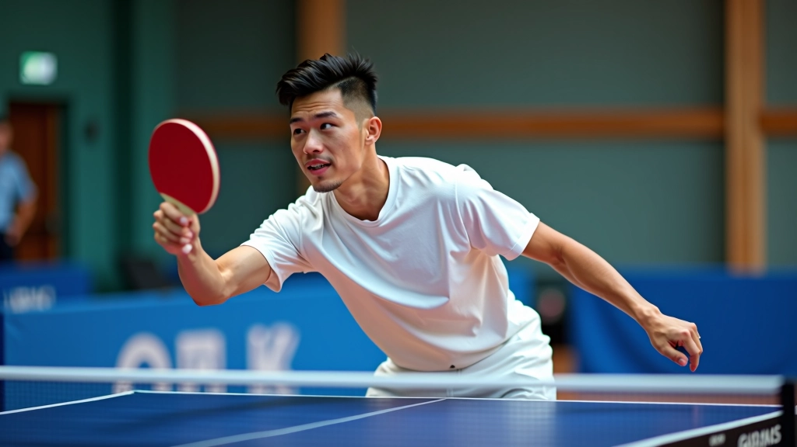
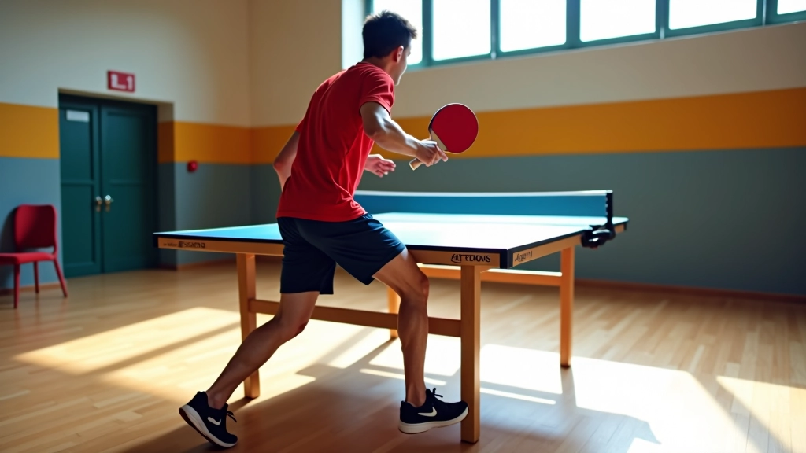
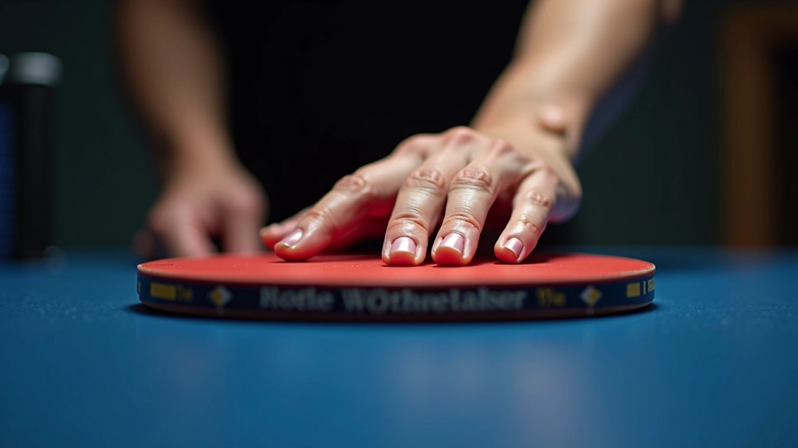
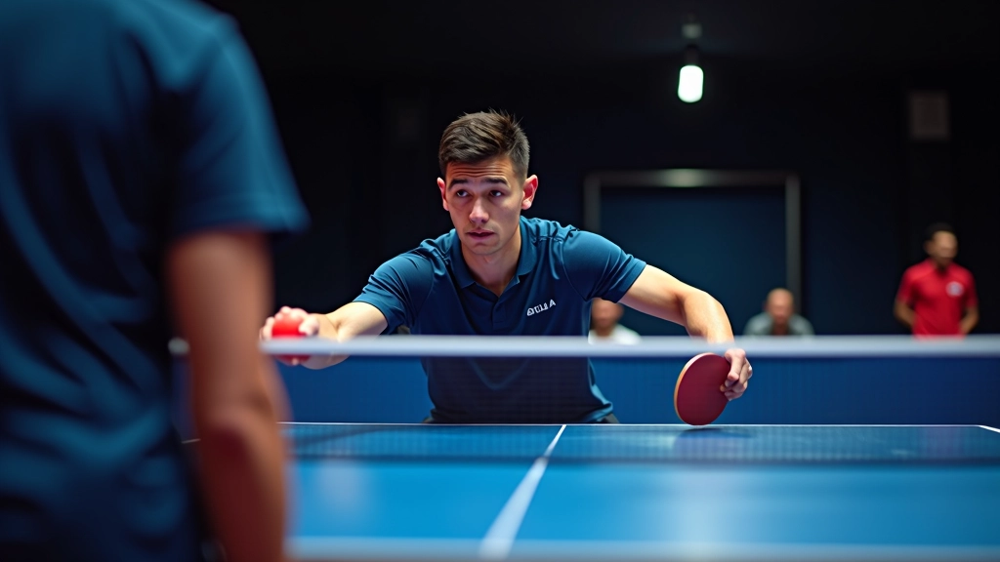

تقنيات الرد على الإرسالات الجانبية
الإرسالات الجانبية صعبة لكنها يمكن السيطرة عليها. نشرح كيفية قراءة الدوران والرد بثقة.
تعرف على الموقف الصحيح والحركات التي تحتاجها لبدء اللعب. هذه الأساسيات توفر أساساً قوياً لكل شيء آخر تتعلمه.

الموقف الصحيح يعني أنك مستعد للحركة. إنه ليس مجرد الوقوف هناك — إنه عن كيفية توزيع وزنك وحيث تضع قدميك. معظم المبتدئين يركزون على الضربة فقط ولا ينتبهون للموقف، لكن هذا خطأ كبير.
نحن نعلم أن الموقف قد يبدو ممل. لكن بعد أسبوع أو اثنين من التدريب المنتظم، سيصبح غريزي تماماً. ستجد نفسك تتخذ الموقف الصحيح دون التفكير فيه.


قدماك يجب أن تكونا متباعدة بعرض أكتافك تقريباً. هذا يعطيك توازن جيد والقدرة على الحركة السريعة في أي اتجاه. وزنك يجب أن يكون على كرات القدمين، ليس على الكعب.
لا تحاول أن تقف مستقيماً تماماً. تخيل أنك على وشك القفز — هذا هو الشعور الذي تريده. عندما تكون جاهزاً بهذه الطريقة، يمكنك الحركة بسرعة في أي لحظة.
الخطوات الصغيرة هي سرك. بدلاً من خطوة واحدة كبيرة، تحتاج إلى سلسلة من الخطوات الصغيرة السريعة. هذا يسمى "الخطوات المتوازنة" وهو يساعدك على الاستعداد لأي اتجاه قد يذهب الإرسال.
تخيل أنك تقفز بخفة على قدميك — هذا هو النمط الذي تريده. لا تبقى ثابتاً أبداً. حتى عندما تنتظر الإرسال، يجب أن تتحرك قليلاً. هذا يبقيك منتبهاً ويحسن توقيتك.


قبضتك تؤثر على كل شيء — من قوتك إلى دقتك إلى سرعة استجابتك. لا تقبض المضرب بقوة. امسكه برفق لكن بثقة. تخيل أنك تمسك عصفوراً — بقوة كافية حتى لا يهرب، لكن برفق حتى لا تؤذيه.
امسك المضرب مثل قلم الرصاص. إصبع الإبهام والسبابة يمسكان المقبض، والأصابع الأخرى تلتف حول الخلف. هذا يعطيك مرونة وتحكماً جيداً. معظم لاعبي تنس الطاولة المبتدئين يبدأون بهذه القبضة.
بعد بضعة أسابيع، قد تريد تجربة قبضات أخرى. لكن في البداية، قبضة القلم توفر أفضل توازن بين السهولة والفعالية.
التوقيت الجيد يعني بدء حركتك في الوقت المناسب. لا تنتظر حتى تقترب الكرة جداً. عندما ترى الكرة تترك يد الخصم، يجب أن تكون قد بدأت بالفعل في الحركة نحو الكرة. هذا هو الفرق بين اللاعب الجيد والاعب العادي.
ركز على حركات الخصم. لا تركز على الكرة فقط — انظر إلى كيفية إمساكهم بالمضرب وزاوية ذراعهم. كل هذا يخبرك عن نوع الإرسال الذي يأتي.

لا تحتاج إلى ساعات طويلة. تحتاج فقط إلى التدريب المنتظم. إليك ثلاثة تمارين يمكنك القيام بها الآن:
قف في الموقف الأساسي لمدة 30 ثانية. كرر 5 مرات. ركز على الشعور بالتوازن. قم بهذا يومياً لمدة أسبوع.
مارس الخطوات الصغيرة السريعة بدون مضرب أو كرة. تخيل أنك تنتظر إرسالاً. استمر لمدة دقيقة واحدة. افعل هذا ثلاث مرات في كل جلسة.
اطلب من شخص ما أن يرمي الكرة نحوك ببطء. لا تحاول ضربها. ركز فقط على توقع مكان الكرة وتحريك قدميك للوقوف في المكان الصحيح.
معظم المبتدئين يقعون في نفس الفخاخ. إليك ما يجب البحث عنه:
إذا كنت تقف مثل التمثال، فلن تتمكن من الحركة السريعة. حتى إذا كنت تنتظر فقط، يجب أن تتحرك قليلاً.
عندما تقبض المضرب بقوة، تفقد المرونة. ستشعر بتوتر في ذراعك. استرخ واترك يدك تتحرك بحرية.
تركيزك على الكرة فقط هو خطأ. عندما تراقب الخصم أيضاً، تتوقع الإرسال قبل أن يحدث.
هذه الإرشادات مقدمة لأغراض تعليمية وإعلامية. كل لاعب مختلف، والتقدم يختلف من شخص لآخر. إذا كنت تعاني من أي ألم أو إصابة أثناء التدريب، توقف فوراً واطلب نصيحة من مدرب محترف. التدريب الجيد يجب أن يكون ممتعاً وآمناً.
الآن بعد أن تعرفت على الأساسيات، حان الوقت لبدء التدريب. لا تتوقع أن تكون مثالياً من اليوم الأول. الكل يبدأ من حيث بدأت. ركز على الموقف والخطوات والتوقيت — كل شيء آخر سيأتي بعد ذلك.
تدرب ثلاث مرات في الأسبوع على الأقل. بعد شهر من التدريب المنتظم، ستلاحظ فرقاً كبيراً. بعد ثلاثة أشهر، ستكون مختلفاً تماماً. الصبر والمثابرة هما المفتاح.
اكتشف تقنيات متقدمة لمعالجة الإرسالات المختلفة.
تعلم تقنيات الرد على الإرسالات الجانبية
الإرسالات الجانبية صعبة لكنها يمكن السيطرة عليها. نشرح كيفية قراءة الدوران والرد بثقة.

معظم اللاعبين يقعون في نفس الفخاخ. نناقش الأخطاء التي تراها بشكل متكرر وكيفية إصلاحها.

السرعة تأتي من التدريب المتكرر والمنظم. إليك تمارين محددة تحسن وقت رد الفعل لديك.